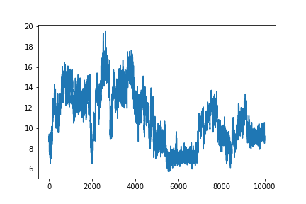
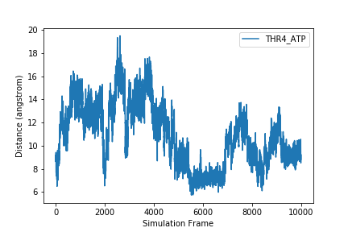
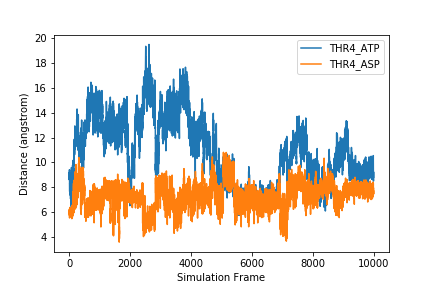
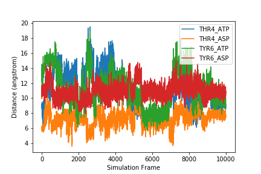

Plotting and Data Visualization
Overview
Teaching: 20 min
Exercises: 20 minQuestions
How do I visualize data by making graphs?
Objectives
Plot data to visualize results.
Label plot axes and create a figure legend.
Plot multiple graphs on one figure.
Save figures to files.
One of the most common ways to present scientific data is through graphs or plots.
Plotting Data
Another common way to analyze tabular data is to graph it. To graph our data, we will need a new python library that contains functions to plot data. To plot our data, we will use a Python library called matplotlib.
import matplotlib.pyplot
matplotlib.pyplot.figure() #This initializes a new figure
matplotlib.pyplot.plot(data[:,0])

matplotlib.pyplot is a lot to type every time we make a plot. Often, when people import python modules they give them a shorthand name so that they have to type less. For example, matplotlib.pyplot is commonly shortened to plt. You’ll see this in official documentation for matplotlib. Let’s change our code so we don’t have to type this every time.
import matplotlib.pyplot as plt
plt.figure()
plt.plot(data[:,0])
Labeling plots and saving figures
But what information is our plot showing? We should label our axes and add a legend that tells us which sample this is. We can add x and y labels using the xlabel and ylabel functions. To add a label so we can use a legend on the plot, we add the label keyword to the plot function. We may also want to save our plot as an image so we can use it outside of this notebook. To do this, we use the savefig function.
sample = headers[1]
plt.figure()
plt.xlabel('Simulation Frame')
plt.ylabel('Distance (angstrom)')
fig_1 = plt.plot(data[:,1], label=sample)
plt.legend()
plt.savefig(F'{sample}.png')

After executing this code, check the directory you are working in. You should have an image called THR4_ATP.png that looks like the one displayed above and in your notebook.
To plot more than one data set on the same graph, we just add another plot command.
plt.figure()
plt.xlabel('Simulation Frame')
plt.ylabel('Distance (angstrom)')
plt.plot(data[:,0], label=headers_noframe[0])
plt.plot(data[:,1], label=headers_noframe[1])
plt.legend()
plt.savefig('two_samples.png')

If we want to plot all samples on the same plot, we can use a for loop to loop through all the columns. Here, we put the x and y labels and savefig command outside of the for loop since those things only need to be done once.
for col in range(len(data[0,:])):
fig = plt.plot(data[:,col], label=headers_noframe[col])
plt.legend()
plt.xlabel('Simulation Frame')
plt.ylabel('Distance (angstrom)')
plt.savefig('all_samples.png')

Exercise
How would you make a different plot for each sample? Save each image with the filename
sample_name.png.Solution
To make a different plot for each sample, move the
plt.figure()and theplt.savefigcommands inside theforloop.for col in range(len(data[0,:])): plt.figure() sample = headers_noframe[col] plt.plot(data[:,col], label=sample) plt.legend() plt.xlabel('Simulation Frame') plt.ylabel('Distance (angstrom)') plt.savefig(F'{sample}.png')
Key Points
The
matplotliblibrary is the most commonly used plotting library.You can import libraries with shorthand names.
You can save a figure with the
savefigcommand.